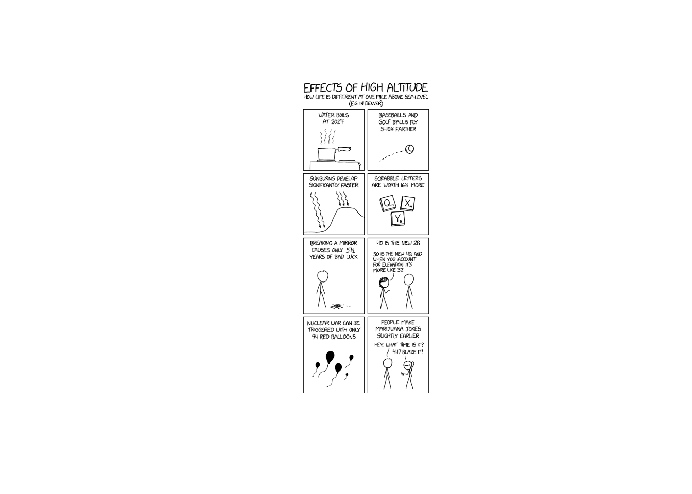
Lesson 11: One Mean T-Test
Lesson Administration
Calendar
Day 1
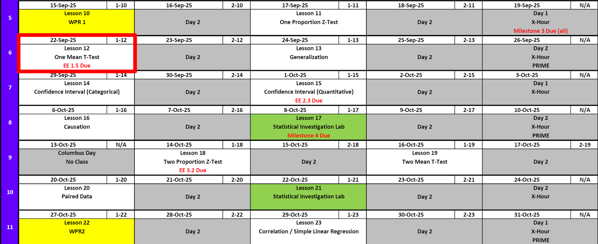
Day 2
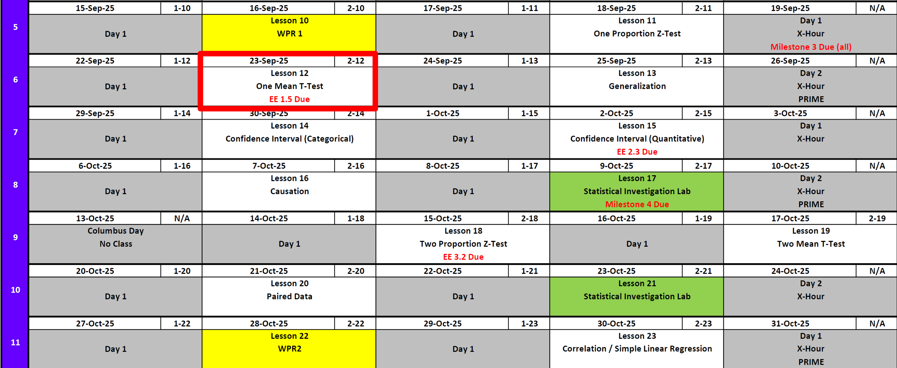
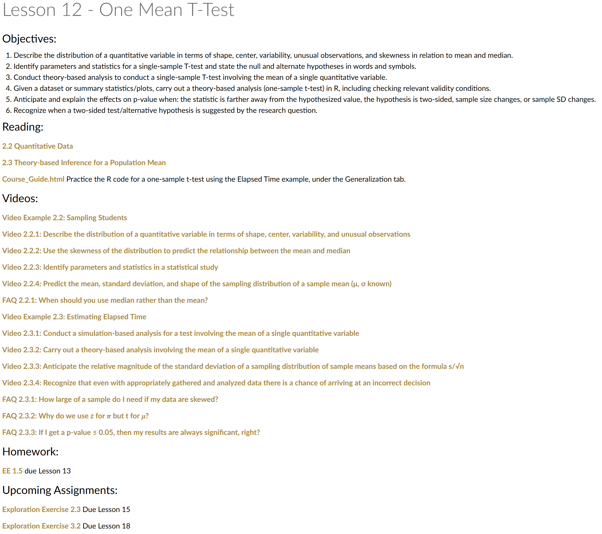
Exploration Exercise 1.5
- ⏰ Due 0700 ET on Lesson 13
- Day 1: Wednesday, 24 Sept 2025
- Day 2: Thursday, 25 Sept 2025
- Day 1: Wednesday, 24 Sept 2025
- 📑 Worksheet: https://westpoint.instructure.com/courses/10295/assignments/216497 — don’t sleep on this!
- Will need applet for simulation
TEE Schedule
| Date | Start | End |
|---|---|---|
| Wed, 17 Dec 2025 | 1300 | 1630 |
| Thu, 18 Dec 2025 | 0730 | 1100 |
Cal
12/120
10:37
Bunny
One Mean T-Test
Review: \(z\)-Tests for One Proportion
For all cases:
\[ z = \frac{\hat{p} - \pi_0}{\sqrt{\frac{\pi_0 (1 - \pi_0)}{n}}} \]
| Alternative Hypothesis | Formula for \(p\)-value | R Code |
|---|---|---|
| \(H_A: p > \pi_0\) | \(p = 1 - \Phi(z)\) | p_val <- 1 - pnorm(z_stat) |
| \(H_A: p < \pi_0\) | \(p = \Phi(z)\) | p_val <- pnorm(z_stat) |
| \(H_A: p \neq \pi_0\) | \(p = 2 \cdot (1 - \Phi(|z|))\) | p_val <- 2 * (1 - pnorm(abs(z_stat))) |
Where:
- \(\hat{p} = R/n\) (sample proportion)
- \(\pi_0\) = hypothesized proportion under \(H_0\)
- \(\Phi(\cdot)\) = cumulative distribution function (CDF) of the standard normal distribution.
One Mean T-Test (Less than alternative)
We want to test whether Male cadets (Don’t worry ladies, we’ll get to you) are shorter than the average height of U.S. men aged 19–24, which is 72 inches.
Hypotheses
\[ H_0 : \mu = 72 \]
\[ H_A : \mu < 72 \]
Sample Data
heights <- c(70, 71, 69, 73, 68, 74, 71, 70, 72, 69, 70, 71, 68, 73)
Is This a Good Sample?
We measured the heights of 14 cadets in this class.
But our research question is about all U.S. men aged 19–24.
- Do cadets in this class represent the broader population (what is that population)?
- What kinds of biases might be present?
- If the sample isn’t random, how should that affect our conclusions?
Test Statistic Formula
\[ t \;=\; \frac{\bar{x} - \mu_0}{s / \sqrt{n}}, \qquad df = n - 1 \]
\[ \begin{aligned} \bar{x} & = \text{sample mean} \\[4pt] \mu_0 & = \text{hypothesized mean (72)} \\[4pt] s & = \text{sample standard deviation} \\[4pt] n & = \text{sample size} \\[4pt] t & = \text{test statistic} \end{aligned} \]
Sample Statistics
n <- length(heights)
xbar <- mean(heights)
s <- sd(heights)
c(n = n, mean = round(xbar, 2), sd = round(s, 2)) n mean sd
14.00 70.64 1.86 Calculate the Test Statistic
mu0 <- 72
t_stat <- (xbar - mu0) / (s / sqrt(n))
t_stat[1] -2.722848Visualize the t Distribution
df <- n - 1
ggplot() +
geom_function(fun = dt, args = list(df = df), xlim = c(-4, 4)) +
labs(title = "t-Distribution with df = 13")Add the observed test statistic:
ggplot() +
stat_function(fun = dt, args = list(df = df), xlim = c(-4, t_stat),
geom = "area", fill = "darkblue", alpha = 0.5) +
geom_function(fun = dt, args = list(df = df), xlim = c(-4, 4)) +
geom_vline(xintercept = t_stat, color = "firebrick", linewidth = 1.2) +
labs(title = "Left-tail Shaded: t-Distribution with Test Statistic")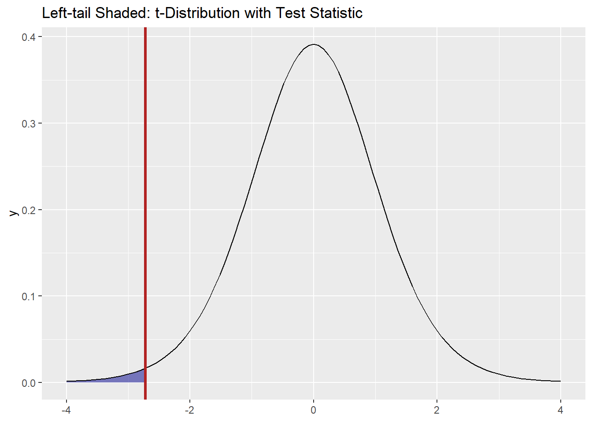
p-value
p_val <- pt(t_stat, df = df)
p_val[1] 0.008708986Conclusion
With p ≈ .008, we do have evidence that male cadets are shorter than 72 inches.
One Mean T-Test (Greater than alternative)
We want to test whether female cadets are taller than the average height of U.S. women aged 19–24, which is 64 inches.
Hypotheses
\[ H_0 : \mu = 64 \]
\[ H_A : \mu > 64 \]
Sample Data
heights <- c(65, 67, 66, 64)Test Statistic Formula
\[ t \;=\; \frac{\bar{x} - \mu_0}{s / \sqrt{n}}, \qquad df = n - 1 \]
Sample Statistics
n <- length(heights)
xbar <- mean(heights)
s <- sd(heights)
c(n = n, mean = round(xbar, 2), sd = round(s, 2)) n mean sd
4.00 65.50 1.29 Calculate the Test Statistic
mu0 <- 64
t_stat <- (xbar - mu0) / (s / sqrt(n))
t_stat[1] 2.32379Visualize the t Distribution
df <- n - 1
ggplot() +
geom_function(fun = dt, args = list(df = df), xlim = c(-4, 4)) +
labs(title = "t-Distribution with df = 3")Add the observed test statistic and shade the right tail:
ggplot() +
stat_function(fun = dt, args = list(df = df), xlim = c(t_stat, 4),
geom = "area", fill = "darkred", alpha = 0.5) +
geom_function(fun = dt, args = list(df = df), xlim = c(-4, 4)) +
geom_vline(xintercept = t_stat, color = "firebrick", linewidth = 1.2) +
labs(title = "Right-tail Shaded: t-Distribution with Test Statistic")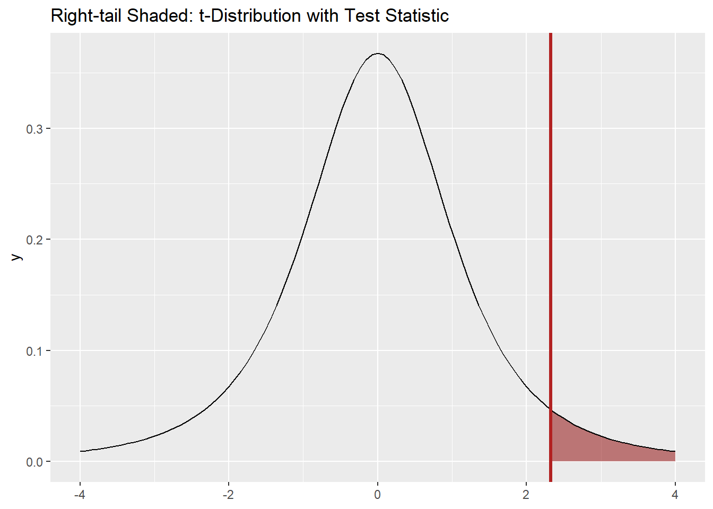
p-value
p_val <- 1 - pt(t_stat, df = df) # one-tailed, greater than
p_val[1] 0.05136404Conclusion
With p ≈ .051, we do not have strong evidence that female cadets are taller than 64 inches.
One Mean T-Test (Two-Tailed Alternative)
Suppose the national average height of men aged 19–24 is 72 inches.
We want to test whether West Point Department of Math instructors are different (either taller or shorter).
Hypotheses
\[ H_0 : \mu = 72 \]
\[ H_A : \mu \neq 72 \]
Sample Data
Here is a sample of heights (in inches) from 28 Math instructors:
heights <- c(71, 70, 73, 72, 74, 69, 71, 72, 70, 73, 72, 71, 75, 70, 72, 74, 71, 69, 73, 72, 70, 71, 74, 72, 70, 73, 71, 72)Test Statistic Formula
\[ t \;=\; \frac{\bar{x} - \mu_0}{s / \sqrt{n}}, \qquad df = n - 1 \]
Sample Statistics
n <- length(heights)
xbar <- mean(heights)
s <- sd(heights)
c(n = n, mean = round(xbar, 2), sd = round(s, 2)) n mean sd
28.00 71.68 1.56 Calculate the Test Statistic
mu0 <- 72
t_stat <- (xbar - mu0) / (s / sqrt(n))
t_stat[1] -1.086979Visualize the t Distribution
df <- n - 1
ggplot() +
geom_function(fun = dt, args = list(df = df), xlim = c(-4, 4)) +
labs(title = paste("t-Distribution with df =", df))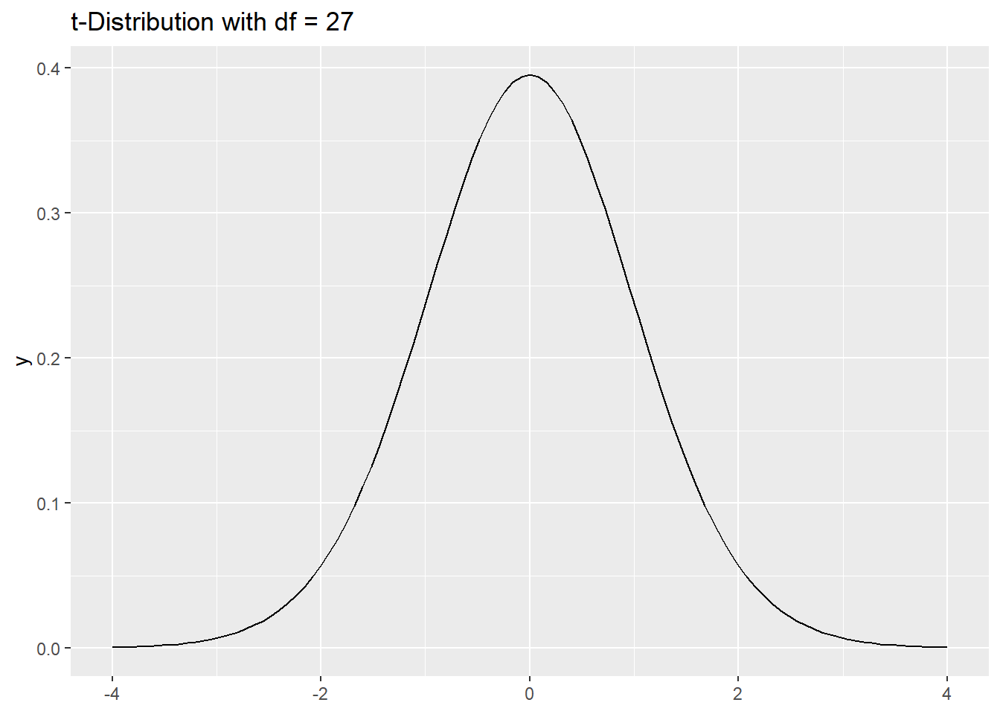
Add the observed test statistic and shade both tails:
ggplot() +
stat_function(fun = dt, args = list(df = df), xlim = c(-4, -abs(t_stat)),
geom = "area", fill = "steelblue", alpha = 0.5) +
stat_function(fun = dt, args = list(df = df), xlim = c(abs(t_stat), 4),
geom = "area", fill = "steelblue", alpha = 0.5) +
geom_function(fun = dt, args = list(df = df), xlim = c(-4, 4)) +
geom_vline(xintercept = t_stat, color = "firebrick", linewidth = 1.2) +
geom_vline(xintercept = -t_stat, color = "firebrick", linewidth = 1.2) +
labs(title = "Two-tailed Shaded: t-Distribution with Test Statistic")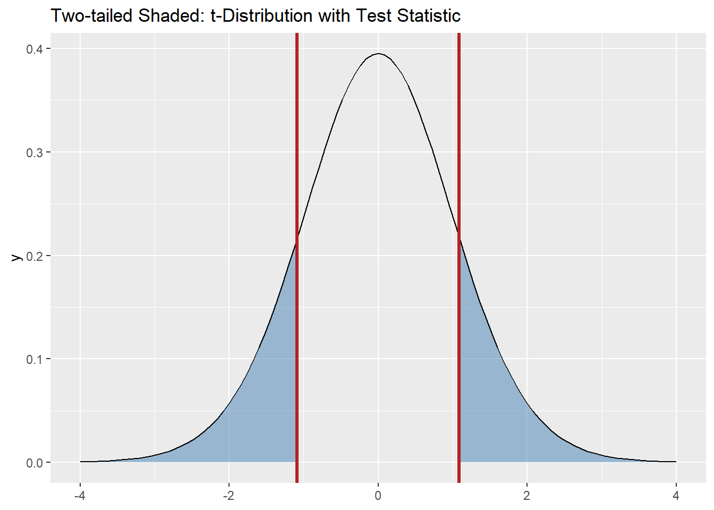
p-value
p_val <- 2 * (1 - pt(abs(t_stat), df = df)) # two-tailed
p_val[1] 0.286655Conclusion
With p ≈ .29, we do not have evidence that Math instructors’ heights differ from 72 inches.
T Distribution Exploration
Overlay several \(t\) distributions with different degrees of freedom and the standard normal \(N(0,1)\) for comparison.
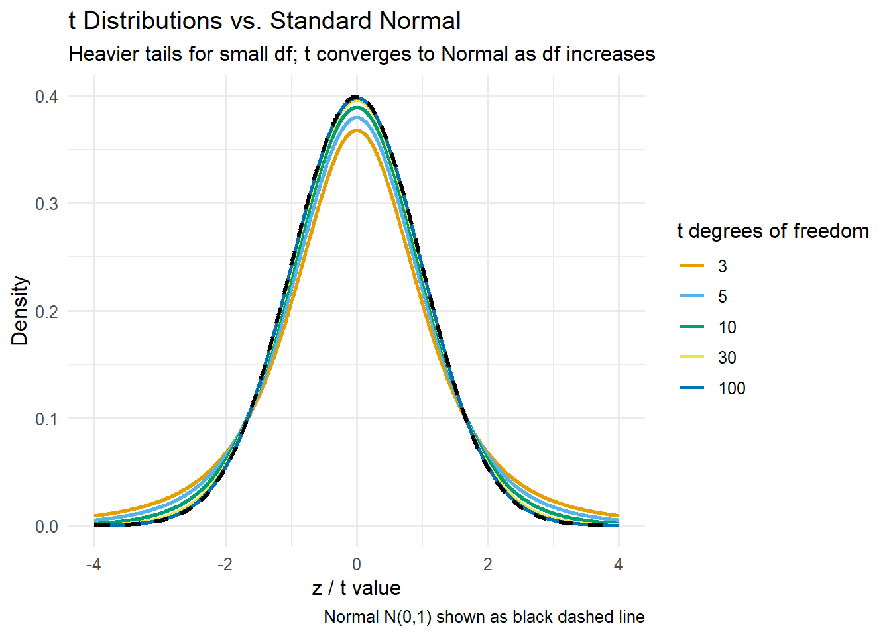
Board Problems
Coffee Consumption
Nationally, the average college student drinks about \(3.2\) cups of coffee per day.
You suspect cadets might consume a different amount (not necessarily more or less).
You collect a sample of \(12\) cadets with the following self-reported daily coffee consumption (in cups):
coffee <- c(2.5, 3.0, 3.8, 4.1, 3.2, 2.9, 3.6, 4.0, 3.3, 2.7, 3.5, 3.9)Tasks:
- State the null and alternative hypotheses.
- Compute the sample mean \(\bar{x}\), standard deviation \(s\), and sample size \(n\).
- Write down the test statistic formula for a one-sample \(t\)-test.
- Calculate the test statistic.
- Find the \(p\)-value for the appropriate two-tailed test.
- State your conclusion in the context of the problem.
Helpful formula
\[ t \;=\; \frac{\bar{x} - \mu_0}{s/\sqrt{n}}, \qquad df = n-1 \]
Solution (click to expand)
1. Hypotheses
\[ H_0: \mu = 3.2 \qquad\text{vs}\qquad H_A: \mu \neq 3.2 \]
2. Descriptive statistics (R)
n <- length(coffee)
xbar <- mean(coffee)
s <- sd(coffee)
c(n = n, mean = round(xbar, 3), sd = round(s, 3)) n mean sd
12.000 3.375 0.528 Numerically: \(n = 12\), \(\bar{x} \approx 3.375\), \(s \approx 0.528\).
3–4. Test statistic
mu0 <- 3.2
t_stat <- (xbar - mu0) / (s / sqrt(n))
df <- n - 1
c(t_stat = round(t_stat, 3), df = df)t_stat df
1.149 11.000 Numerically: \(t \approx 1.149\) with \(df = 11\).
5. Two-tailed \(p\)-value
p_val <- 2 * (1 - pt(abs(t_stat), df = df))
p_val[1] 0.2749615Numerically: \(p \approx 0.275\).
(Optional) Visual: Two-tailed shading for the observed statistic
library(ggplot2)
ggplot() +
# Left tail shading
stat_function(fun = dt, args = list(df = df), xlim = c(-4, -abs(t_stat)),
geom = "area", fill = "darkblue", alpha = 0.5) +
# Right tail shading
stat_function(fun = dt, args = list(df = df), xlim = c(abs(t_stat), 4),
geom = "area", fill = "darkblue", alpha = 0.5) +
# Overlay t density
geom_function(fun = dt, args = list(df = df), xlim = c(-4, 4)) +
# Vertical lines at ±t_stat
geom_vline(xintercept = c(-abs(t_stat), abs(t_stat)),
color = "firebrick", linewidth = 1.2, linetype = "dashed") +
labs(title = "Two-tailed Shaded: t-Distribution with Test Statistic",
x = "t", y = "Density")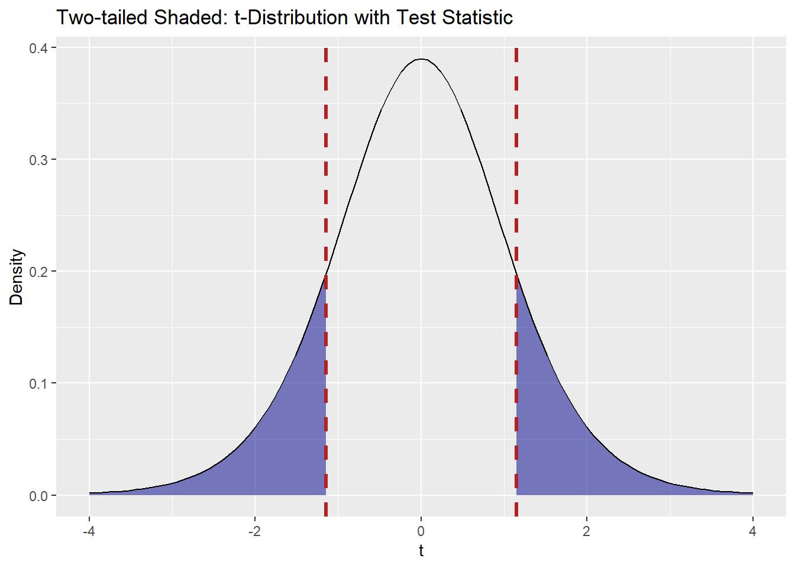
6. Conclusion
With \(p \approx 0.275\), we do not have evidence that cadets’ average coffee consumption differs from \(3.2\) cups per day.
Daily Screen Time
A recent campus wellness report suggests the average college student spends \(3.0\) hours per day on recreational screen time (not including coursework).
You suspect students in your section spend more than that.
You collect a sample of \(12\) students with the following daily screen-time values (in hours):
screen_time <- c(2.5, 3.0, 3.1, 3.2, 3.3, 3.4, 3.8, 3.7, 3.8, 3.2, 3.5, 3.5)Tasks: 1. State the null and alternative hypotheses.
2. Compute the sample mean \(\bar{x}\), standard deviation \(s\), and sample size \(n\).
3. Write down the test statistic formula for a one-sample \(t\)-test.
4. Calculate the test statistic.
5. Find the one-tailed \(p\)-value for the “greater than” test.
6. State your conclusion in context.
Solution (click to expand)
1. Hypotheses \[ H_0: \mu = 3.0 \qquad\text{vs}\qquad H_A: \mu > 3.0 \]
2. Descriptive statistics (R)
n <- length(screen_time)
xbar <- mean(screen_time)
s <- sd(screen_time)
c(n = n, mean = round(xbar, 3), sd = round(s, 3)) n mean sd
12.000 3.333 0.373 3–4. Test statistic
mu0 <- 3.0
t_stat <- (xbar - mu0) / (s / sqrt(n))
df <- n - 1
c(t_stat = round(t_stat, 3), df = df)t_stat df
3.1 11.0 5. One-tailed \(p\)-value (\(H_A: \mu > \mu_0\))
p_val <- 1 - pt(t_stat, df = df)
p_val[1] 0.0050564536. Conclusion
With the computed \(t\) and \(p\) above, interpret whether there is evidence that average daily recreational screen time in this section exceeds \(3.0\) hours.
(Optional) Visual: right-tail shading for the observed statistic
library(ggplot2)
ggplot() +
stat_function(fun = dt, args = list(df = df), xlim = c(t_stat, 4),
geom = "area", alpha = 0.5) +
geom_function(fun = dt, args = list(df = df), xlim = c(-4, 4)) +
geom_vline(xintercept = t_stat, linewidth = 1.2) +
labs(title = "Right-tail shaded: t-Distribution with Test Statistic",
x = "t", y = "Density")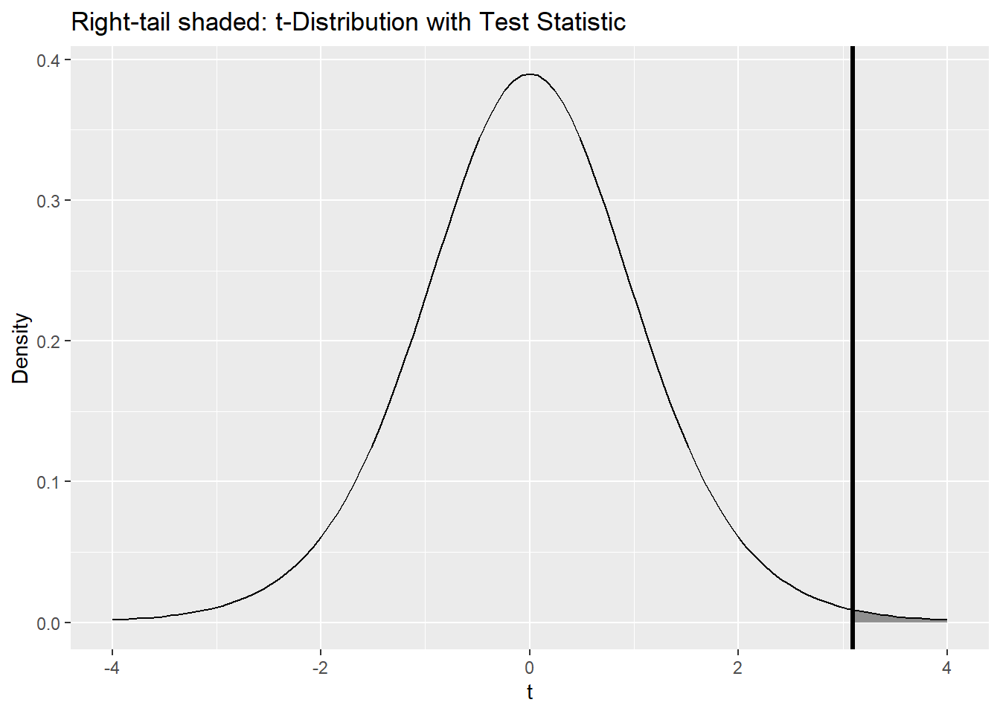
Weeknight Sleep
Public health guidelines recommend \(7.0\) hours of sleep on weeknights.
You suspect students in your section average less than that.
You collect a sample of \(15\) students’ self-reported weeknight sleep (in hours):
sleep <- c(6.6, 6.9, 7.1, 6.8, 7.0, 6.7, 6.5, 6.8, 6.9, 6.4, 6.6, 7.2, 6.7, 6.8, 6.5)Tasks: 1. State the null and alternative hypotheses.
2. Compute the sample mean \(\bar{x}\), standard deviation \(s\), and sample size \(n\).
3. Write down the test statistic formula for a one-sample \(t\)-test.
4. Calculate the test statistic.
5. Find the one-tailed \(p\)-value for the “less than” test.
6. State your conclusion in context.
Helpful formula
\[ t \;=\; \frac{\bar{x} - \mu_0}{s/\sqrt{n}}, \qquad df = n-1 \]
Solution (click to expand)
1. Hypotheses \[ H_0: \mu = 7.0 \qquad\text{vs}\qquad H_A: \mu < 7.0 \]
2. Descriptive statistics (R)
n <- length(sleep)
xbar <- mean(sleep)
s <- sd(sleep)
c(n = n, mean = round(xbar, 3), sd = round(s, 3)) n mean sd
15.000 6.767 0.229 3–4. Test statistic
mu0 <- 7.0
t_stat <- (xbar - mu0) / (s / sqrt(n))
df <- n - 1
c(t_stat = round(t_stat, 3), df = df)t_stat df
-3.949 14.000 5. One-tailed \(p\)-value (\(H_A: \mu < \mu_0\))
p_val <- pt(t_stat, df = df)
p_val[1] 0.00072797586. Conclusion
Report the computed \(t\), \(df\), and \(p\), then conclude whether there is evidence that average weeknight sleep is less than \(7.0\) hours.
(Optional) Visual: Left-tail shading for the observed statistic
library(ggplot2)
ggplot() +
# Left tail shading up to t_stat
stat_function(fun = dt, args = list(df = df), xlim = c(-4, t_stat),
geom = "area", fill = "darkblue", alpha = 0.5) +
# Overlay t density
geom_function(fun = dt, args = list(df = df), xlim = c(-4, 4)) +
# Vertical line at t_stat
geom_vline(xintercept = t_stat,
color = "firebrick", linewidth = 1.2, linetype = "dashed") +
labs(title = "Left-tail Shaded: t-Distribution with Test Statistic",
x = "t", y = "Density")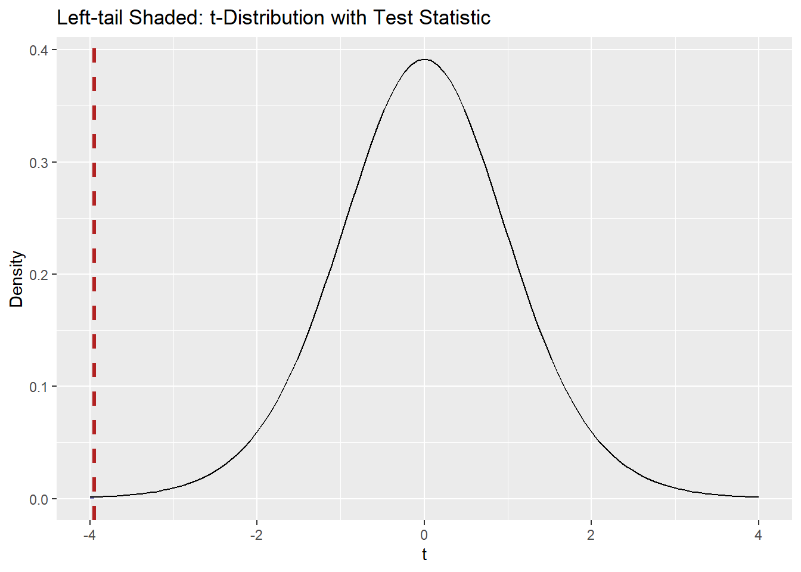
Before you leave
Today:
- Any questions for me?
Upcoming Graded Events
- Project Milestone 3: Due Canvas 22 Sept
- Exploration Exercise 1.5: Due at 0700 on Lesson 13
- 24 September 2025 for Day 1
- 25 September 2025 for Day 2)
- WPR 2: Lesson 22